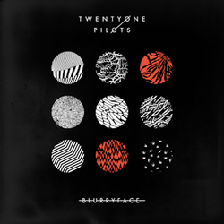
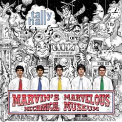
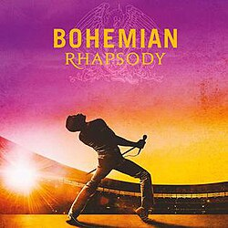
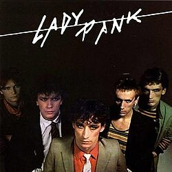

Strona Główna
O zespołachnajlepsze albumykrótko o zespołach
System Of A Down
System Of A Down to ormiańsko-amerykański zespół metalowy, znany z połączenia agresywnej energii z unikalnym stylem wokalnym Serja Tankiana. W ich muzyce słychać nagłe zmiany tempa, ostre riffy i tematy społeczne oraz polityczne. W 2025 roku zespół zagra koncert w Warszawie, co wzbudza ogromne emocje wśród polskich fanów. Ich największe hity to „Chop Suey!”, „Toxicity” oraz „B.Y.O.B.”.
Twenty One Pilots
Twenty One Pilots to duet łączący pop, rap, elektronikę i alternatywny rock. Tyler Joseph i Josh Dun tworzą muzykę pełną energii, emocji i symboliki. Ich teksty dotyczą lęków, dorastania i walki z samym sobą. Popularność przyniosły im albumy „Blurryface” i „Trench”.
Tally Hall
Tally Hall to amerykański zespół wyróżniający się humorystycznym podejściem do muzyki i nietypowym stylem. Łączą pop, rock i elementy musicalowe, tworząc piosenki brzmiące jak zabawne opowiadania. Dzięki internetowej popularności ich utwory — „Ruler of Everything”, „Good Day”, „The Bidding” — stały się kultowe.
Queen
Queen to jedna z najważniejszych grup rockowych w historii. Ich muzyka łączy potężny wokal Freddiego Mercury’ego, gitarowe brzmienie i inspiracje operą. W ich dorobku znajdują się tak ponadczasowe utwory jak „Bohemian Rhapsody”, „We Will Rock You”, „Don’t Stop Me Now”. Zespół pozostaje symbolem kreatywności i scenicznej potęgi.
Daft Punk
Daft Punk to francuski duet elektroniczny, który zrewolucjonizował muzykę taneczną. Ich twórczość to mieszanka house’u, funku i elektroniki, a charakterystyczne hełmy robotów stały się ikoną popkultury. Największe hity to „One More Time”, „Get Lucky” i „Harder, Better, Faster, Stronger”.
Wham!
Wham! to brytyjski duet popowy, który w latach 80. zdobył ogromną popularność swoją lekką, radosną muzyką. George Michael i Andrew Ridgeley stworzyli takie klasyki jak „Wake Me Up Before You Go-Go” i „Last Christmas”, które do dziś są rozpoznawalne na całym świecie.
Lady Pank
Lady Pank to jeden z najważniejszych polskich zespołów rockowych. Charakteryzuje ich chwytliwy styl, mocne melodie i ponadczasowe teksty. Dzięki utworom „Mniej niż zero” czy „Zawsze tam, gdzie Ty” zdobyli miejsce w historii polskiej muzyki i nadal pozostają popularni.
Najlepszy album zespołu (moim zdaniem)
System Of A Down
Debiutancki album zespołu to mieszanka agresji, energii i eksperymentalnego brzmienia. Już tutaj SOAD pokazał swój rozpoznawalny styl pełen kontrastów.
 |
|
Blurryface
Album, który ugruntował ich pozycję na świecie. Pełen hitów i emocjonalnych tekstów, łączących różne gatunki w spójną całość.
|  |
|
Marvin's Marvelous Mechanical Museum
Zabawny, różnorodny i kreatywny album wypełniony nietypowymi pomysłami — od musicalowych klimatów po absurdalny humor.
|  |
|
Bohemian Rhapsody(The Original Soundtrack)
Ścieżka dźwiękowa do filmu o Queen, pełna koncertowych wykonań i największych hitów. Bardzo dobry przekrój przez twórczość zespołu.
|  |
|
Random Acess Memories (10th Anniversary Edition)
Rozszerzona edycja legendarnego albumu, łącząca elektronikę, funk i analogowe brzmienia — uważana za jedno z najlepszych dzieł XXI wieku.
 |
|
Fantastic
Debiutancki album duetu — czysty, energiczny pop lat 80. Idealny, jeśli ktoś chce poczuć klimat epoki.
 |
|
Lady Pank
Klasyczny album polskiego rocka, pełen najważniejszych hitów zespołu, które na stałe zapisały się w historii muzyki.
|  |
|